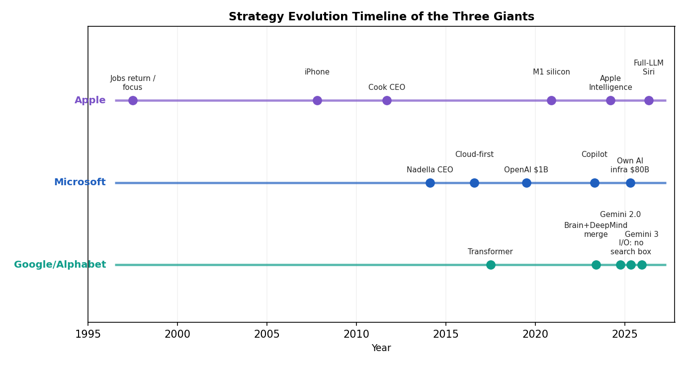
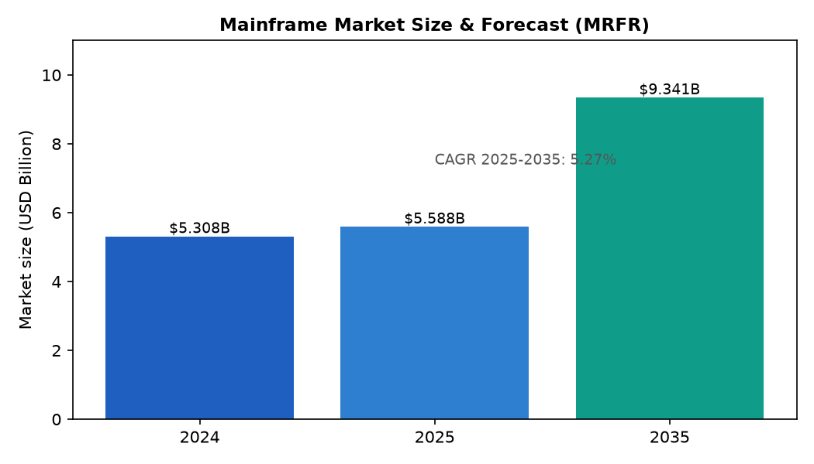
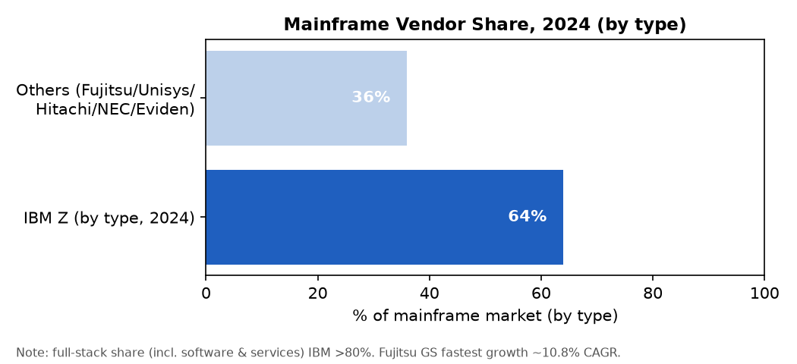
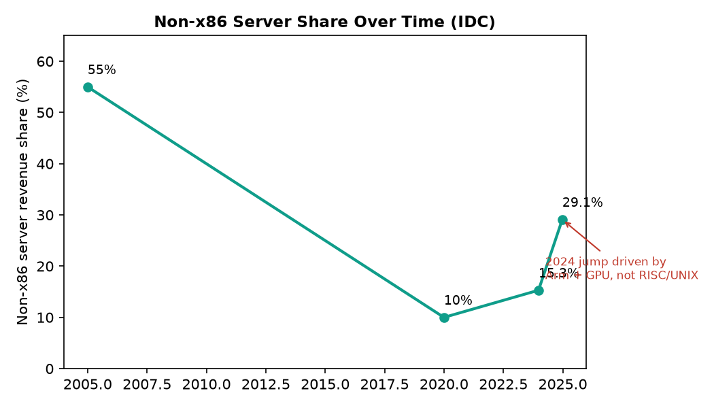
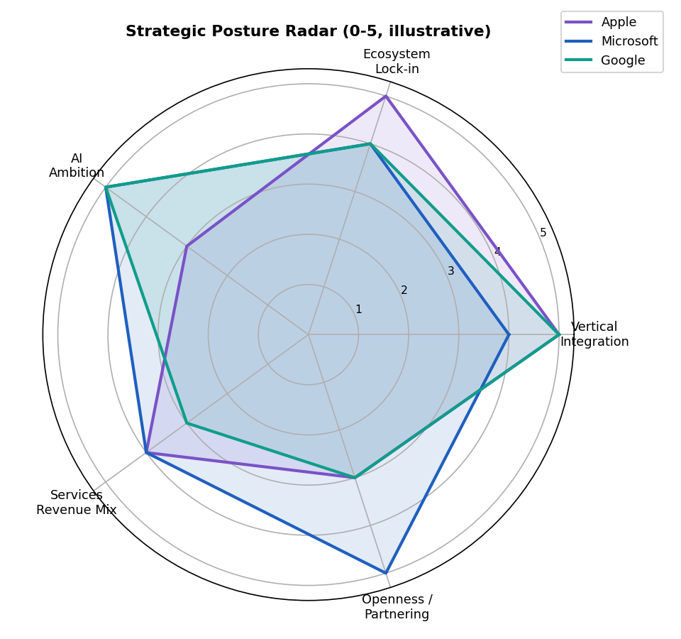
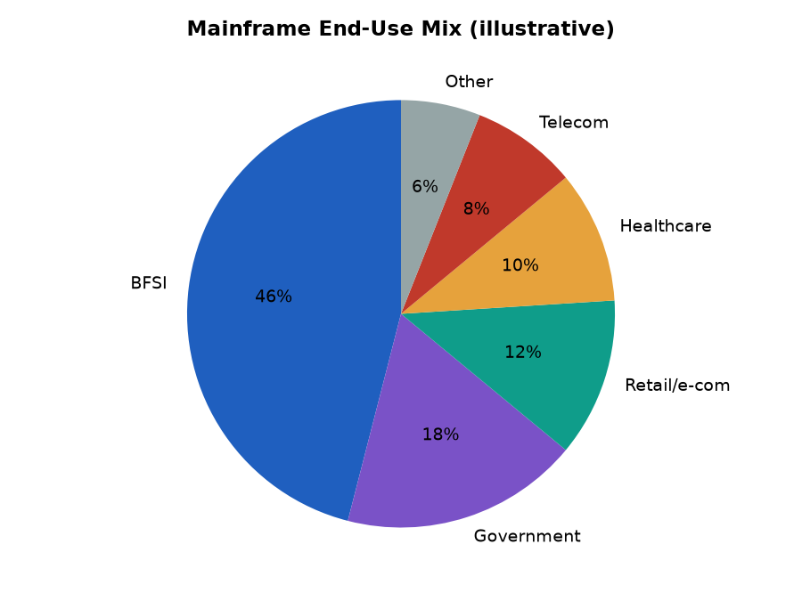

按「技术 / 工程 / 市场」三维度的结构化梳理与研判 ｜ 研究日期 2026-10-05 ｜ 视角：全球产业 + 中国语境
交付物：本报告同时输出 HTML（含嵌入式图表）、PDF 与 Word(.docx) 三版，内容一致。框架为「技术 / 工程 / 市场」三维 × 五子题（技术演进与架构、工程难题与解决、应用经验与最佳实践、市场规模/客户/需求、未来趋势与挑战）+ 跨类别结构化结论。
0 术语与分类说明（重要前提）
三类机器并非简单的“体积大小”，而是计算机产业演进中形成的层级化产品家族。中文术语在不同时期含义有漂移，本报告先作界定，以免后续混淆。
| 类别 | 本报告界定 | 典型代表 / 历史沿革 |
|---|
| 大型机 Mainframe | 最高层级的集中式商用计算机系统，强调极致可靠性（RAS）、海量事务吞吐与强安全；是“硬件 + 专属软件”的封闭整体。 | IBM Z 系列；渊源 IBM System/360(1964)→370→390→z/Architecture(2000)。兼容厂商：Amdahl、Hitachi、Fujitsu GS、Unisys ClearPath、Bull/Eviden GCOS。 |
| 中型机 Midrange | 介于大型机与微机之间的“中端”商用系统。本报告以 IBM 的 midrange 谱系为主轴——即 AS/400 及其后继者。 | IBM System/3、/36、/38 → AS/400(1988) → eServer iSeries → System i → 2008 并入 IBM Power Systems，操作系统定名 IBM i。 |
| 小型机 Minicomputer / RISC-UNIX | 现代中文 IT 语境下，“小型机”通常指基于 RISC 的 UNIX 服务器（及历史上的微型机）。是大型机之外的高可靠专用服务器。 | 历史微型机：DEC PDP-8/11、VAX、Data General、HP 3000。现代“小型机”：Sun SPARC、IBM POWER(pSeries)、HP PA-RISC/Integrity(Itanium)、Fujitsu SPARC64。 |
注意：三类机器的边界在历史中不断模糊——微型机（minicomputer）在 1980 年代后逐渐被“中端计算机（midrange）”一词取代；而今天银行所说的“下小型机”往往指替换 RISC/UNIX 服务器。

图：图1 三类机器的技术演进时间线（大型机持续兼容 60 年；中型机以 TIMI 抽象平滑演进；小型机/RISC-UNIX 由盛转衰）
第一部分 大型机（Mainframe）
1.1 技术演进路线与架构特点
演进路线（以 IBM 为主线，60 年持续兼容）：1964 System/360（投资 50 亿美元，提出“一套兼容指令集覆盖全产品线”，奠定向后兼容传统）；1970 System/370（多处理器、虚拟内存；1972 发布 VM 虚拟化）；1983 S/370-XA（31 位）；1990 ESA/390；2000 z/Architecture（z900，64 位）；z9(2005)→z10(2008)→z196/zEC12(2010-12)→z13(2015)→z14(2017)→z15(2019)→z16(2022，Telum 片上 AI 加速器 + 普遍加密)→z17(2025，Telum II + Spyre AI 加速器，日处理推理 4500 亿次，具备量子安全加密)。
| 维度 | 要点 |
|---|
| 指令集 | z/Architecture，64 位 CISC，面向高事务吞吐与 RAS（可靠性/可用性/可服务性） |
| 虚拟化 | 逻辑分区 LPAR（单台可同时跑 z/OS、z/VM、z/VSE、Linux on Z，各自独占资源、相互隔离） |
| 集群 | Parallel Sysplex：最多 32 台系统作为单一系统映像，经 Coupling Facility 实现多节点读写共享数据库 |
| 专用引擎 | zIIP（Java/Linux/AI）、IFL（Linux）、ICF（耦合）等，隔离负载并优化软件计费 |
| 处理器 | Telum II：三星 7nm，单核 5.2GHz，每芯片 8 核，整机最多 250 核；每核 32MB L2，八核虚拟共享 256MB L3 |
| 安全 | 硬件级加密加速器、安全启动、Secure Service Container、普遍加密（静止+传输默认加密，近零性能损耗） |
1.2 研发制造中的关键工程难题及解决思路
| 工程难题 | 挑战本质 | IBM 的解决思路 |
|---|
| 极致 RAS | 金融/政府核心系统要求年宕机以毫秒计，任何单点故障不可接受。 | 全系统 N+1 冗余：双流水线锁步执行（结果不一致则回滚重试）；核心故障透明“换脑”到备用核；内存通道/DIMM/CPU/制冷回路甚至时钟振荡器均有热备与动态接管。 |
| 单线程性能瓶颈 | 1994 年从 BiCMOS 转 CMOS 致单核频率骤降，性能停滞约 5 年。 | 以“并行即补丁”策略：用 Parallel Sysplex 集群与多核扩展弥补；至 G4(1997) 追平、G5(1998) 反超 2 倍。 |
| 跨代二进制兼容 | 需保 60 年旧程序可运行，又不能冻结架构演进。 | 稳定 z/Architecture 抽象 + 微码层映射；新硬件以微码“降级”支持旧负载，实现平滑升级。 |
| I/O 吞吐 | 海量并发设备访问不能拖累 CPU。 | 独立 I/O 通道处理器（Channel）；FICON（增强校验光纤通道）；单设备至多 4 条独立控制路径。 |
| 能耗与制冷 | 高密度计算与绿色计算压力。 | 混合制冷、模块化供电；z16→z17 AI 加速提升 7.5 倍而能耗仅约 1/5.5，主打能效叙事。 |
| 供应链与产能 | 高端定制芯片（7nm）与疫情扰动。 | 动态容量调配（按需激活核心），缓解短期供给波动对客户的影响。 |
社会性工程难题——人才断层：89% 企业称大型机“关键”却难招 z/OS、COBOL 人才；资深人员到 2030 年退休比例或达 30%。这是比硬件更棘手的长期约束。
1.3 行业典型应用经验与最佳实践
- 银行（系统之记录 / System-of-Record）：全球约 90% 信用卡活动、每秒约 100 万笔交易经大型机处理；z16 单日可处理 190 亿笔加密交易，可用性 99.999%；44–45 家全球 50 大银行使用 IBM Z（71% Fortune 500 依赖大型机做核心交易）。
- 保险：全球前 10 大保险公司中 8 家以大型机做 AI 精算建模与理赔处理。
- 医疗 / 政府 / 电信：92% 大型医疗机构依赖大型机处理病历；政府社保、税务、电信计费同为典型负载。
最佳实践范式（混合现代化）：① 核心账务/清算留在大型机（保 RAS 与合规）；② 分析、AI、前端渠道就近或上云，用 z/OS Cloud Broker、OpenShift on Z 把容器化负载跑在主机旁，避免“数据重力”搬运；③ 增量重构而非整体迁移——用 Heirloom 等工具把 COBOL 编译为 Java 字节码，保留业务逻辑、降低风险；④ 用 Parallel Sysplex 实现跨数据中心灾备。
1.4 市场规模、客户群体与需求特征
| 指标 | 数值 / 事实 |
|---|
| 全球市场规模 | 2024 约 53.08 亿美元（MRFR），CAGR 5.27%（2025-2035），2035 预计 93.41 亿美元；另有多源给出 25–50 亿美元区间（口径差异，见附录）。 |
| 厂商格局 | 按机型 IBM Z 约占 64%（2024，Mordor/Kenanga）；含软件+服务的“全栈口径”IBM >80%；Fujitsu GS 系列约 10.8% CAGR 追赶。 |
| 客户行业 | BFSI（银行保险）约占 46% 营收；零售电商（CAGR ~10.5–11.2%）、政府、医疗、制造、电信构成多元需求。 |
| 地域 | 北美 ~41%；亚太增速最快（Mordor 9.35% CAGR 至 2031；Kenanga 9.8% 至 2030）。 |
| 部署形态 | 本地部署 ~71%；Mainframe-as-a-Service 约 12.3% CAGR；约 96% 企业走混合模型。 |
| 客户规模 | 大型集团贡献 ~83% 营收；SME 借助按用量计费增长更快（~8.9% CAGR）。 |
| 付费门槛 | 入门硬件约 25 万美元起，中大型 200 万–2000 万美元+；软件按 MSU（百万服务单元）计费，年许可常超 10 万美元。 |

图：图2 大型机市场规模与预测（MRFR，2024=53.08 亿美元，2035=93.41 亿美元，CAGR 5.27%）

图：图3 大型机厂商份额（按机型，2024）：IBM Z 约 64%；全栈口径 IBM >80%
1.5 未来趋势与潜在挑战
| 趋势 | 挑战 |
|---|
| 片上 AI 推理（Telum/Spyre）让欺诈检测“数据不出机” | 人才断层（COBOL/z/OS）负面拉动 CAGR 约 -1.2% |
| 后量子（抗量子）加密成为新硬件刷新刚需（NIST 2024 标准，~2030 落地） | 总拥有成本（TCO）相较公有云 x86 偏高，对 SME 不友好 |
| 混合云 + DevOps/REST API 化，主机“现代化”而非“退休” | 云原生“绿色计算”承诺分流部分 CIO 预算 |
| 主权托管（数据本地化）刺激新兴市场采购 | 中国国产分布式替代削弱外牌大型机增量 |
第二部分 中型机（Midrange / IBM i）
2.1 技术演进路线与架构特点
演进路线：IBM System/3(1969)→System/34→System/36(1978)→System/38(1983，对象化 OS + 关系型 DB)→AS/400(1988)→eServer iSeries(2000)→System i(2006)→2008 与 System p 合并为 IBM Power Systems，OS 定名 IBM i；后续 IBM i 7.1/7.2/7.3/7.4，至 IBM i 7.5(2022，服务期延展至 2035/2045)，并已于 2025-04 发布 IBM i 7.6（运行于 Power10/Power11）。
| 维度 | 要点 |
|---|
| 灵魂设计 | TIMI（技术无关机器接口）：应用编译为虚拟指令而非物理机器码。1995 年平台从 48 位 CISC 换 64 位 PowerPC RISC 时，旧程序无需重编译即可运行——OS 按存储的 TIMI 指令重生机器码。 |
| 存储模型 | 单级存储（Single-Level Storage）+ 集成 Db2；‘一切皆对象’（非 Unix 的‘一切皆文件’），内存/磁盘统一编址。 |
| 安全 | 1988 年获 NSA C2 安全认证；安全内建于对象模型（无‘root’、无法直接访问内存），天生强隔离。 |
| 运行模型 | 作业排队（Job Queue）+ 子系统优先级/内存限额；IFS 集成文件系统；原生 Java 虚拟机；可经集成 xSeries 适配器托管 Windows。 |
| 现代形态 | 运行于 IBM Power 处理器（Power9/10/11），支持 RPG/COBOL/C/C++/Java/SQL/PHP/Python/.NET 等，兼容云与开源。 |
2.2 研发制造中的关键工程难题及解决思路
| 工程难题 | 挑战本质 | 解决思路 |
|---|
| 处理器代际更换不中断业务 | 从 CISC 转向 RISC 会令海量旧应用失效，是行业普遍死穴。 | TIMI 抽象层实现“换芯不换码”，平滑完成 48 位→64 位迁移，成为护城河也是锁定根源。 |
| 安全与易用性矛盾 | 强安全常牺牲可用性。 | 对象化 OS 把安全做进内核，同时提供菜单驱动、自动排错、开箱即用（turnkey）。 |
| “过于稳固”的锁定 | 系统常年无故障 → 团队不敢动原始代码 → 形成隐性技术债。 | 以现代化工具链（PASE 桥接 AIX、开源语言支持）渐进接入新生态，而非推倒重来。 |
| 集成复杂度 | 硬件+OS+DB+中间件一体交付，耦合度高。 | 模块化硬件设计 + 一体化固件管理，降低 SME 运维门槛。 |
2.3 行业典型应用经验与最佳实践
- 中小银行 / 部门级核心：美国某中型银行核心自 1993 年持续运行 AS/400 至今未中断；中型机以“低运维、高可用”成为 SME 核心系统首选。
- 制造 / 零售 / 物流 / 医疗：ERP、库存、计费、病历等事务型负载广泛部署。
最佳实践：① 善用 TIMI 做“无感现代化”——旧 RPG 程序与 Python/PHP/Java 新模块并存；② 以 IBM i 作稳定底座，外圈接云与移动端；③ 用 SQL 与现代接口暴露遗留逻辑，避免“黑箱化”。
2.4 市场规模、客户群体与需求特征
| 维度 | 数值 / 事实 |
|---|
| 历史峰值 | AS/400 上市 4 个月售 2.5 万台（当时 IBM 最成功发布）；1997 年装机 50 万；1990 年平台年营收约 140 亿美元——‘中端机身、大型机数字’。 |
| 当前形态 | 并入 IBM Power Systems（与 AIX、Linux on Power 共享硬件）。IBM Power 系 IBM 基础设施板块组成部分（2024 基础设施总营收约 140 亿美元，含大型机/存储/Power，未单列 IBM i）。 |
| 客户 | 中小企业为主，延伸至大型企业的部门级与核心外围系统；行业覆盖制造、零售、金融、医疗、物流。 |
| 需求特征 | ‘稳定、安全、开箱即用、可从小 4 核扩展到 256 核’；兼容性需求极强（旧程序原样运行）。 |
2.5 未来趋势与潜在挑战
| 趋势 | 挑战 |
|---|
| IBM i 7.5 服务期延展至 2035/2045，7.6(2025) 已发布，路线图到 2030 年代中期 | RPG/COBOL 老兵退休，技能断层与大型机同源 |
| AI/ML 集成（7.4 起）、云连接、开源语言（Python/PHP/Node）支持增强 | x86/Linux 与云原生以更低 TCO 侵蚀中端市场 |
| 以 Power10/11 + 混合云延续‘稳底座’定位 | ‘太稳不敢动’导致现代化滞后、隐性技术债累积 |
第三部分 小型机（Minicomputer & RISC/UNIX 服务器）
3.1 技术演进路线与架构特点
微型机时代（1965–1985，约 100 家厂商，至 80 年代中期仅余约 6 家）：DEC PDP-8(1965，12 位、售价 1.85 万美元，售 5 万台——公认首款商业成功微型机)；PDP-11(1970，16 位、UNIBUS，售 60 万+，Unix 诞生地)；VAX(1977/78，32 位‘超级微型机’、VMS/OpenVMS 集群，售 40 万+)。同期 Data General Nova、HP 2100/3000、Prime、Wang。
RISC/UNIX “小型机”时代（1980s–2000s，现代中文语境主指）：Sun SPARC(1987，源自 Berkeley RISC，Solaris)；IBM RS/6000→pSeries→POWER（AIX）；HP PA-RISC→Integrity(Itanium)；MIPS、DEC Alpha(64 位 RISC)、Fujitsu SPARC64 等同台竞技。
| 维度 | 要点 |
|---|
| 架构特征 | RISC（SPARC/POWER/PA-RISC/MIPS/Alpha）或后期 CISC（x86）；Unix 系 OS（Solaris/AIX/HP-UX/Tru64）；SMP、CC-NUMA、集群；强单线程与 I/O。 |
| 历史贡献 | 普及了多用户交互、分时、Unix 与 C、局域网——现代服务器/工作站的设计范式多源于此。 |
| 中国语境 | ‘小型机’常指 RISC/UNIX 服务器；银行曾以 Sun/HP/IBM 小型机承载核心外围与中间业务，后成为‘去 IOE / 信创’的主要替代对象。 |
3.2 研发制造中的关键工程难题及解决思路
| 工程难题 | 挑战本质 | 解决思路 / 结局 |
|---|
| 被 x86/Linux 商品化碾压 | 2000 年代互联网泡沫后 Unix 走弱，Linux on x86 以更低成本吃掉互联网负载；非 x86 营收份额从 50–60% 跌至 2020 年代初 ~10%。 | 专有 RISC 生态难以对抗开放生态的规模效应——多数厂商退出或转型。 |
| 架构路线断代 | 押注错误 ISA 即成沉没成本（如 Itanium、Alpha）。 | Oracle 在 M8(2017) 后终止 SPARC 设计；Fujitsu 停 SPARC、转投 ARM，UNIX 服务器 2029 停售、2034 停维。 |
| 性能被追平 | x86 多核与制程进步抹平 RISC 单线程优势。 | 仅 IBM POWER 凭与大型机协同 + AI/ML（Power10）维持高端差异化。 |
| 生态封闭 | 各自 Unix 版本割裂，ISV 支持成本高。 | 向 Linux 兼容（AIX/Linux on Power）靠拢以续命。 |
3.3 行业典型应用经验与最佳实践
- 部门计算 / 科学 / 过程控制：微型机把算力带到实验室、工厂、校园，开启‘去中心化’计算。
- 早期互联网基础设施与数据库：Oracle 等跑在 Unix 小型机上，是 2000 年代企业后台主力。
- 中国银行‘下小型机’实践：邮储银行以浪潮‘天梭’小型机集群替代 IBM 大型机构建超大规模交易核心（全球首例），并全面推行‘PC 服务器集群替代小型机集群’，降成本、提密度、促国产化。
最佳实践：以集群化 + 分布式替代单点高可靠；用开放标准（Linux、x86/ARM）降低锁定；核心下移采用‘单元化、可灰度、可回滚’的迁行工程方法论。
3.4 市场规模、客户群体与需求特征
| 维度 | 数值 / 事实 |
|---|
| 整体趋势 | 专有 RISC/UNIX 小型机处于结构性衰退。非 x86 服务器营收份额 2023Q4 为 15.3%，2024Q4 升至 29.1%——但增量几乎全部来自 Arm（云厂自研）+ GPU，而非传统 RISC/Unix。 |
| x86 参照 | 2024Q4 x86 服务器营收 548 亿美元（+59.9%），其中过半来自 GPU 加速服务器（多为 Nvidia）。 |
| SPARC 现状 | 实质终结：Oracle 停设计、Fujitsu 转 ARM 并定下 2029 停售 / 2034 停维。 |
| 存活者 | 仅 IBM Power（AIX + IBM i）凭高端差异化存续；其余 UNIX 服务器市场持续萎缩。 |
| 中国替代 | ‘去 IOE / 信创’驱动：以华为鲲鹏（ARM）、海光、飞腾、浪潮、联想等国产服务器 + 麒麟/统信 OS + OceanBase/GoldenDB 分布式数据库，替代进口小型机与大型机。 |

图：图4 非 x86 服务器营收份额演变（IDC）：2000s 50–60% → 2020s初 ~10% → 2024Q4 29.1%，但 2024 跳升由 Arm+GPU 驱动，非 RISC/UNIX
3.5 未来趋势与潜在挑战
| 趋势 | 挑战 |
|---|
| 专有 RISC/Unix 小型机走向终局，仅在 IBM Power 与遗留系统存活 | 遗留 Unix 系统的迁移成本与业务连续性风险 |
| 算力重心转向 x86 + Arm + GPU/AI 加速的开放集群 | ISV 生态向 Linux/云原生迁移，旧平台支持萎缩 |
| 中国国产 ARM/RISC-V 服务器承接‘小型机’角色 | 国产替代需补齐芯片、DB、OS 全栈自主与人才 |
第四部分 跨类别结构化结论

图：图5 体系结构路线对比（示意 1–5 分）：大型机 RAS/兼容性极强但开放性低；中型机因 TIMI 兼容性突出；小型机/RISC 开放性高但兼容性弱
4.1 技术维度结论
- 大型机：以‘持续兼容 + RAS + 集中式高吞吐’构建不可替代性。60 年二进制兼容、LPAR/Parallel Sysplex、片上加密与 AI 加速器，使其在处理‘系统之记录’时仍具结构优势。z/Architecture 是活化石级但持续进化的架构。
- 中型机：以‘抽象层（TIMI）+ 对象化集成’实现平滑演进。换芯不换码的能力是工程典范，也造成强锁定；IBM i 是‘稳而不僵’的中端范本。
- 小型机：以‘RISC + Unix’开创范式，却败于开放生态。其设计思想（多用户、集群、RISC）被 x86/Linux/ARM 吸收并规模化反超，专有小型机退场是‘封闭 vs 开放’的经典案例。
4.2 工程维度结论
- 三类机器共同的工程主题是‘在不中断业务的前提下追求极致可靠与平滑演进’；差异在手段——大型机靠冗余与集群，中型机靠抽象层，小型机靠架构开放。
- 最值得铭记的工程决策：大型机的 N+1 全冗余与 Parallel Sysplex；中型机的 TIMI 抽象；二者都成功地‘让旧资产不死’。
- 真正长期的工程约束已转向‘人’：COBOL/z/OS/RPG 人才断层，是三类机器共同且最棘手的可持续性问题。
4.3 市场维度结论
| 维度 | 大型机 | 中型机（IBM i） | 小型机（RISC/Unix） |
|---|
| 市场状态 | 成熟稳健，约 53 亿美元，低个位数增长 | 稳定利基，依附 Power 生态 | 结构性衰退，专有形态走向终局 |
| 份额格局 | IBM 80%+（全栈）/ 64%（按机型） | IBM 独家，强客户黏性 | 仅 IBM Power 存活，SPARC 已终 |
| 主客户 | 大银行/保险/政府/医疗（BFSI~46%） | SME + 大企业部门级 | legacy 企业后台、中国正被国产替代 |
| 需求内核 | 零宕机、强安全、合规、高吞吐 | 开箱即用、稳、兼容旧码 | 曾被‘去 IOE’与 x86/ARM 替代 |

图：图6 大型机终端用途结构（示意）：BFSI 约 46%、政府约 18%，其余为零售/医疗/电信/其他
中国语境的特殊性：在‘自主可控 / 信创’战略下，银行核心正从 IBM 大型机/小型机迁向国产分布式架构（建行 2020 完成主机应用下移；工行用 OceanBase；中信用 GoldenDB；四川农商 2025 核心下电 IBM 大型机；邮储用浪潮天梭集群替代）。这直接压缩了外国大型机/小型机在中国的增量，但存量迁移是‘伤筋动骨’的多年工程。
4.4 综合研判与建议
- 大型机不会消亡，但‘扩张时代’结束。其价值锚定在‘不可妥协的可靠与合规’，最佳策略是混合现代化（核心留机、外围上云/重构），而非整体迁移。
- 中型机是‘被低估的稳底座’。对中小金融机构与制造企业，IBM i 的‘无感兼容’仍具性价比，关键是补充现代语言与云连接能力。
- 专有小型机应尽早规划退出。新项目不应新建于 SPARC/Itanium/老旧 Unix；以 Linux on Power、x86/ARM + 分布式数据库承接。
- 人才是共同命门。建议高校/厂商共建 z/OS、COBOL、RPG、IBM i 认证体系，并用 AI 辅助代码理解与重构，缓解断层。
- 中国的战略机会在‘全栈自主’。借大型机/小型机退潮窗口，补齐国产芯片（鲲鹏/海光/飞腾）、OS（麒麟/统信）、分布式数据库（OceanBase/GoldenDB/TiDB）与迁行工程方法论，把‘替代’做成‘超越’。
附录 A 关键数据速查（含对抗式核查注记）
| 指标 | 数值 / 事实 | 核查结论 |
|---|
| 全球大型机市场（2024） | 约 53.08 亿美元（MRFR） | 多源印证；但 Straits/DataInsights 等给出 25–50 亿美元，属估算口径差异，非矛盾 |
| IBM 大型机份额 | 按机型 64%（Mordor/Kenanga）；全栈 >80%；硬件营收另有源称 58% | ‘64% vs 80%’为口径不同，非错误——前者按机型、后者含软件+服务 |
| IBM Z 处理强度 | z16：190 亿笔/日量子安全加密交易；z17：4500 亿次/日 AI 推理 | 19B 为‘加密交易’，300B/450B 为‘AI 推理’，二者不同指标，需区分 |
| Fortune 500 使用率 | 约 71% 依赖大型机做核心交易；44/50 大银行 | IBM 与各媒多源确认；信用卡交易 90% 经大型机 |
| SPARC 结局 | Oracle 2017 停设计；Fujitsu 2029 停售 / 2034 停维 | 多份 SPARC 技术资料一致确认 |
| IBM i 支持期 | 7.5 全服务至 ~2035、延展至 2045；7.6 已于 2025-04 发布 | 原‘支持至 2030+’需修正为更长路线图（Redbooks 确认） |
| 非 x86 服务器份额 | 2023Q4 15.3% → 2024Q4 29.1% | 跳升由 Arm+GPU 驱动，非传统 RISC/Unix 复苏（IDC） |
| 人才断层 | 89% 企业称关键却难招；2030 前退休或达 30% | Mordor Intelligence 等一致 |
主要资料来源
IBM 2024 年报（SEC EDGAR）；Market Research Future《Mainframe Market》(2024/2025)；Mordor Intelligence；IDC 服务器市场追踪（2024Q4）；TechCrunch / Ars Technica / Network World / Rocket Software（z17、RAS、60 周年统计）；IBM Redbooks（IBM i 7.6 生命周期）；SPARC 技术资料（Oracle/Fujitsu 退出）；Kenanga / AInvest / DataInsightsReports（厂商份额与日本生态）；邮储/建行/工行/中信银行分布式核心案例与行业研报（新浪财经、同花顺等）；Open Mainframe Project（Fujitsu/Hitachi/NEC 日本主机生态）。